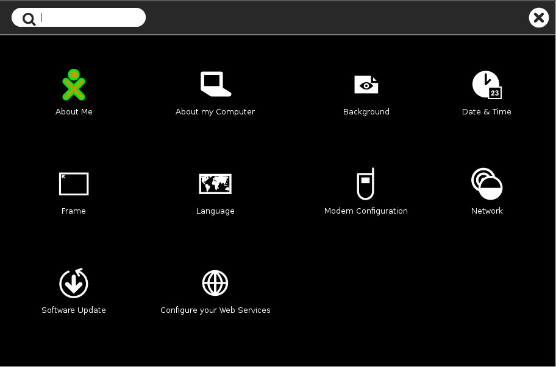

My Settings¶
The My Settings page in Sugar is similar to a Control Panel or System Settings window in other operating systems. It provides a way to view or change values needed by system functions, such as the language for menus and messages, the keyboard layout for typing and otherwise controlling the system, date and time values and format, and much more.
To access My Settings, go to the Home view and activate the menu on the central XO icon, either by hovering with the cursor, or by right-clicking (O button on an XO). Then select My Settings. The following view appears.
My Settings page

Click any icon to open the indicated control. If you make changes, the window will offer you the choice whether to save (check mark) or discard (x) those changes. It may be necessary to reboot the computer or restart the Sugar session in order for the changes to take effect.
About Me¶
View and change your XO colors, name, gender, and grade.
About my Computer¶
View technical information about your computer: model, serial number, software versions, copyright, and license.
Background¶
Change the background image used on the Sugar views. You can also change the opacity of the image.
Date & Time¶
Set timezone for date and time display.
Frame¶
View and set activation rules for the frame. Set the dial as to whether you would like the frame to show up instantaneously (right away), never or somewhere in between when you move your cursor to both the corner and edge of your screen.
Language¶
View and set user interface languages. The language you are currently using will show on the first line, or by itself. If you click on the + at the end of the line, you can select another language. Select from the menu by country and language, or click the + icon by the last line to add another line. If there are two or more lines, a - icon will appear by the last line to allow you to delete it.
Modem Configuration¶
Enter settings for a mobile broadband connection to a cellular network. Not required for WiFi.
Network¶
View and change settings for turning off wireless in order to save battery power, the jabber server name for collaboration, and the web site for social help.
Software update¶
If you are able, check over the Internet for software updates, and install any that are available.
Configure your Web Services¶
Manage your online accounts and interventions to Journal.